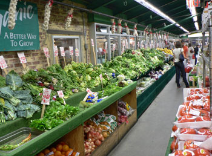
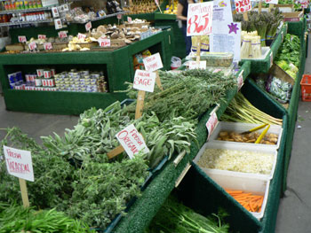

The Manhattan Fruit Exchange

The Manhattan Fruit Exchange, a longtime supplier to New York City restaurants, sits about halfway back in the Chelsea Market, across the hall and slightly deeper than Buon Italia. The narrow, L-shaped store has a long front window overflowing with beautiful produce, but for some reason it’s easy to walk right by it. Chelsea Market doesn’t inspire serious grocery shopping in me.
But the Fruit Exchange has an excellent selection of fruits, vegetables, nuts, spices, coffees, and a few other staples, and a good portion of these items are offered at what may be the best prices in the city. It’s Western Beef prices for Garden of Eden goods. In the impressive mushroom section, there are shiitakes for less than $7 a pound, and morels for between $20 and $25 a pound depending on the day, definitely the cheapest I’ve seen them in Manhattan.

This is also the best place downtown to buy fresh herbs. At other stores in the neighborhood, thyme, rosemary, and sage are trapped in tight plastic cases and sell for upwards for $1.50. At the Fruit Exchange, they sit naked, in piles, and sell for 85 cents per generous bunch. Leafy greens are abundant and similarly cheap, and the produce selections in general are inspired, including such items as lemongrass and baby pineapples.
A wall of dozens of coffee beans are all self-serve for $4.99 a pound, and the huge variety of spices and nuts surrounding them are just as reasonable.
Manhattan Fruit Exchange has just a few downsides: they accept only cash; they carry no meat (other than some sausage and other cured meats), no fresh fish, and very little dairy; they are too damn far west to visit more than once a week; and grocery selections are limited and priced similarly to competitors. In other words, this isn’t one-stop shopping. But if you’re trying to eat more fresh fruits and vegetables, as I am, you can leave the store with several nights’ worth of healthy dinners. (You can also stop across the hall for Italian additions, and you’ll find plenty of fish and meat at other stores in the Market.)
The Manhattan Fruit Exchange
75 Ninth Avenue (between 15th and 16th Streets)
Comments
So true! I am always happy to find myself there, if not often enough.
Add a comment